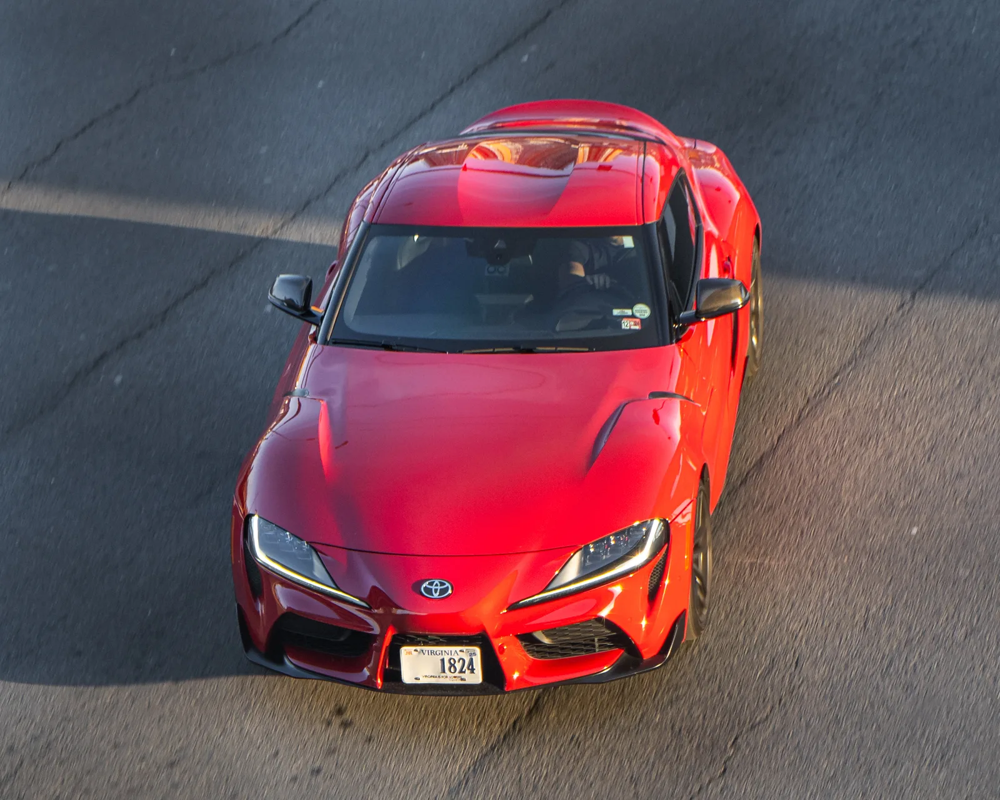

▲ 토요타 GR 수프라(A90). 오일펌프 관련 무상수리가 2026년 12월 31일까지 진행된다 ⓒ Wikimedia Commons (CC BY 4.0)
17년의 공백을 깨고 돌아온 토요타의 상징적인 스포츠카, GR 수프라(A90)가 오일펌프 관련 무상수리 대상에 올랐다. 국토교통부 산하 자동차리콜센터에 등록된 정보에 따르면, 이 조치는 2026년 12월 31일까지 진행된다.
1. GR 수프라 — 17년 만의 부활
▲ 토요타 GR 수프라. 단종 이후 17년 만에 부활한 토요타의 대표 스포츠카다 ⓒ Wikimedia Commons
GR 수프라는 이전 세대 단종 이후 17년 만에 부활한 토요타의 정통 스포츠카로, 국내에서도 마니아층의 관심을 받아온 모델이다. BMW와의 공동 개발로 탄생한 파워트레인과 균형 잡힌 후륜구동 셋업으로 호평받아왔는데, 이번 무상수리는 이 차량의 오일펌프 관련 부품에서 발견된 문제를 해소하기 위한 조치다.
2. 무상수리 기한 — 올해 말까지

▲ 정비소 점검 장면(자료사진). 무상수리는 서비스센터 방문을 통해 진행된다 ⓒ CarPrism
자동차리콜센터에 등록된 정보에 따르면 이번 오일펌프 관련 무상수리는 2026년 12월 31일까지 진행된다. 리콜(결함시정)과 달리 무상수리는 안전에 직접적인 영향을 미치는 결함이 아니더라도 제조사가 자체적으로 품질 개선 차원에서 제공하는 조치다. 대상 차량 소유주는 이 기한 내에 서비스센터를 방문해 점검을 받는 것이 좋다.
3. 확인 및 조치 방법
본인 차량이 대상인지는 국토교통부 산하 자동차리콜센터에서 차대번호로 확인할 수 있다.
자동차리콜센터에서 대상 조회대상으로 확인되면 토요타코리아 공식 서비스센터에서 무상으로 점검과 필요한 조치를 받을 수 있다. 방문 전 미리 예약하면 대기 시간을 줄일 수 있다.
4. 스포츠카에서 오일펌프가 갖는 의미

▲ 차량 점검 시설(자료사진). 고성능 엔진일수록 오일펌프의 안정적인 작동이 중요하다 ⓒ CarPrism
오일펌프는 엔진 윤활 시스템의 핵심 부품으로, 고성능 엔진일수록 안정적인 오일 공급이 더욱 중요하다. GR 수프라처럼 고출력 터보 엔진을 탑재한 스포츠카에서는 특히 오일펌프의 신뢰성이 엔진 수명과 직결된다. 이번 무상수리가 실제 고장이 아니라 예방적 차원의 조치일 가능성도 있는 만큼, 정확한 결함 내용은 서비스센터 방문 시 안내받는 것이 정확하다.
5. 정리
체크포인트
- GR 수프라(A90)가 오일펌프 관련 무상수리 대상에 올랐다.
- 조치 기한은 2026년 12월 31일까지다.
- 대상 여부는 자동차리콜센터에서 차대번호로 확인 가능하다.
- 토요타코리아 서비스센터에서 무상으로 점검·조치받을 수 있다.